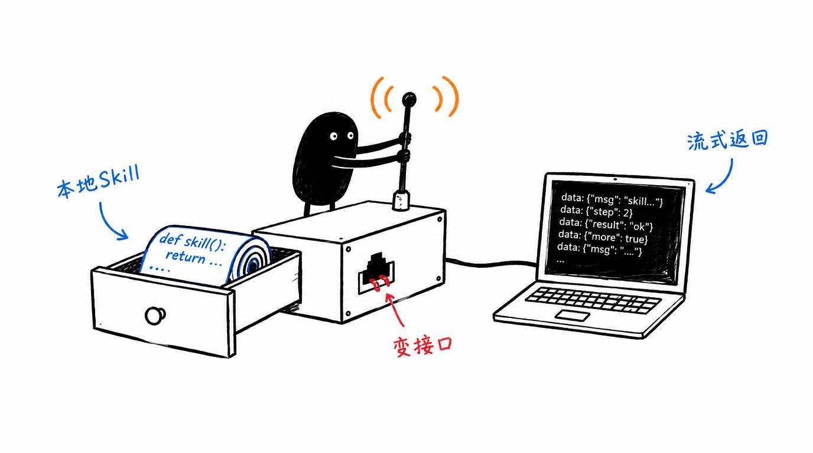

基于 langgraph-runtime 的 agent：把本地 Agent Skill 包装成 HTTP/SSE API，模型负责编排、脚本负责执行、流式返回。
本地 Skill 很好用，但产品化还差一个 API 的距离
这套基于 langgraph-runtime 的 agent 把本地 Skill 包装成 HTTP 服务：用户发 SSE 请求，模型自动选择技能、读取 SKILL.md、调用脚本或搜索网页，再流式返回结果——模型管判断编排，脚本管确定性执行，技能产品化的最短路径。
Skill 转 HTTP API 运行时 的六大能力
本地 Agent Skill 自动包装为 HTTP/SSE API
模型负责选择技能、规划执行路径
脚本负责确定性执行，结果稳定可复现
流式输出，前端接入体验流畅
标准 HTTP 接口，任意前端都能接
把个人技能快速变成可对外服务的能力
小黑手绘风格插图

从输入到产出，一步到位
快速开始
git clone https://github.com/liangdabiao/langgraph-runtime-skill-agent.git
pip install -r requirements.txt
将 Agent Skill 目录放入指定 skills 目录
启动 runtime，按接口文档发送 SSE 请求
现代化技术组合
关于 Skill 转 HTTP API 运行时 的常见疑问